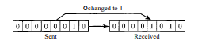

ALUMNO: mendoza kauil carlos eduardo
MATERIA: fundamentos de telecomunicación
Actividad: #887
ERRORES EN LOS DATOS
Siempre que los bits se transmiten de un punto a otro, están sujetos a cambios impredecibles debido a interferencias. Esta interferencia puede alterar la forma de la señal. En un error de un solo bit, un 0 se cambia a 1 o un 1 a 0.
TIPO DE ERRORES DE DATOS
De un bit
Siempre que los bits se transmiten de un punto a otro, están sujetos a cambios impredecibles debido a interferencias. Esta interferencia puede alterar la forma de la señal. En un error de un solo bit, un 0 se cambia a 1 o un 1 a 0.
ERROR DE UN BIT

ERROR DE RAFAGA
El término "error de ráfaga" significa que 2 o más bits en la unidad de datos han cambiado de 1 a 0 o de 0 a 1.
ERROR DE RAFAGA

REDUNDANCIA
Son bits que se agrega el por el emisor y son eliminados por el receptor este permite detectar o corregir errores.
Su presencia permite al receptor detectar o corregir los bits corruptos.
DETECCION Y CORRECCION DE ERRORES
DETECCION DE ERROES: Identifica si hubo un error, pero no la ubicación o cantidad exacta.
CORRECCION DE ERROES: Localiza y corrige errores específicos, lo cual es más complejo y requiere más bits redundantes.
METODOS DE CORRECCION
FORWOARD ERROR CORRECTION
es el proceso en el cual el receptor intenta adivinar el mensaje utilizando bits redundantes.
RETRANSMISSION
El receptor pide al emisor reenviar el mensaje hasta que llegue sin errores.
¿QUE ES CODIFICAR?
Es el proceceos en el que el emisor añade redundancia a los bits mientras un proceso crea una relación entre los bits redundantes y los bits verdaderos detectados.
CODIFICACION EN BLOQUE
Divide los datos en bloques (datawords) a los que se añaden bits redundantes, formando codewords. Esta estructura permite verificar y corregir datos en la transmisión.
DETECCIÓN DE ERRORES USANDO CODIFICACIÓN EN BLOQUES
Para detectar errores, el receptor debe tener una lista de codewords válidos y verificar que el recibido coincida con uno de estos. Si no coincide, el receptor detecta el error.
DISTANCIA DE HAMMING
La distancia de Hamming entre dos palabras mide las diferencias en sus bits. Un mayor valor de distancia de Hamming en un código permite detectar y corregir más errores.
CÓDIGOS CÍCLICOS
Son un tipo de Código de bloques con una propiedad extra. Si un 'Código' es rotado o sus dígitos se ponen al revés, el resultado será otro 'Código' diferente.
CODIGO LINEAL
Un código es lineal si la combinación lineal (suma) de dos palabras de código es también una palabra de código.
CHECK SUM
Un checksum, o suma de verificación, es un valor numérico generado a partir de un conjunto de datos. Este valor actúa como una huella digital de dichos datos y se utiliza para verificar su integridad. En términos más técnicos, un checksum es una función hash de una sola vía aplicada a un bloque de datos.